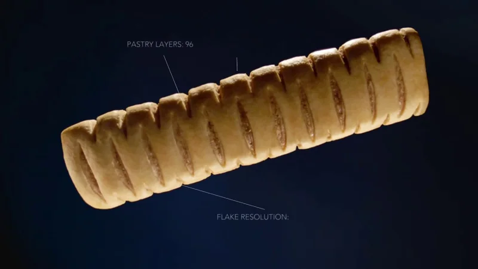
Greggs / 2019
The Vegan Sausage Roll
A pastry launched like a gadget. Watch for the slow reveal.
The campaign archive / Edition 06 / Product first

“The best ad a brand ever makes is usually a product. Everything else is a way of pointing at it.”
Edition 05 was about brands that changed the wrong thing. This edition is about brands that changed the right thing: the product itself, from a seatbelt in 1959 to an alcohol-free stout in 2020. For each I ask one question. What did the product do that an ad couldn’t?
15 case studies / 1959 to 2020
Opening story / Greggs / 2019
On 3 January 2019 Greggs launched a vegan sausage roll with a film styled like a tech launch. A celebrity’s complaint did the rest, and it became the company’s fastest-selling launch in more than six years.
01 / The finding
Eleven of the fifteen cases can point to sales or market share moving, more than any other edition. Products leave a trail: the Wii sold 101.63m consoles, and Apple sold a million iPhones in 74 days. Yet none of the fifteen has a modelled effect. When a product and its launch arrive together, nobody separates what the product did from what the advertising did.
The IPA papers come closest. Lucozade kept the same drink and changed the reason to buy it. Skoda’s cars were already better, and its UK sales grew far faster than in other markets selling the same models. In both, the sales that followed point to the communication. Across the series, modelled effects number 1 in Edition 01, 13 in Edition 02, 6 in Edition 03, 2 in Edition 04, 0 in Edition 05 and none here.
Three cases built the proof into the product itself: Volvo’s seatbelt, Dyson’s clear bin and Nike’s stopwatch. It is the oldest idea in this archive. Show, don’t tell.
02 / The patterns
Five of the series’ six mechanisms appear here, and demonstration leads. A good product is its own demonstration. Choose one to filter the archive.
Stage the benefit so people can see it for themselves.
Say the uncomfortable thing first and make it the point.
Put people in the picture who were missing from it.
Tie the brand to an occasion people already keep.
03 / The screening room
Two films from brand channels, an old safety film and a WIRED explainer. Watch how little each needs to say once the product is on screen.

Greggs / 2019
A pastry launched like a gadget. Watch for the slow reveal.
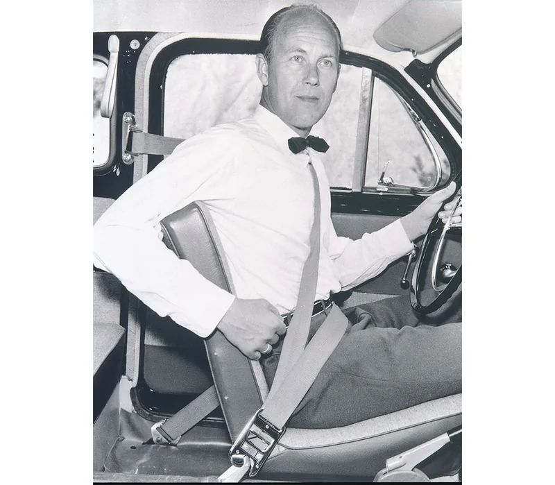
Volvo / 1959
An old safety film. The product is the whole argument.
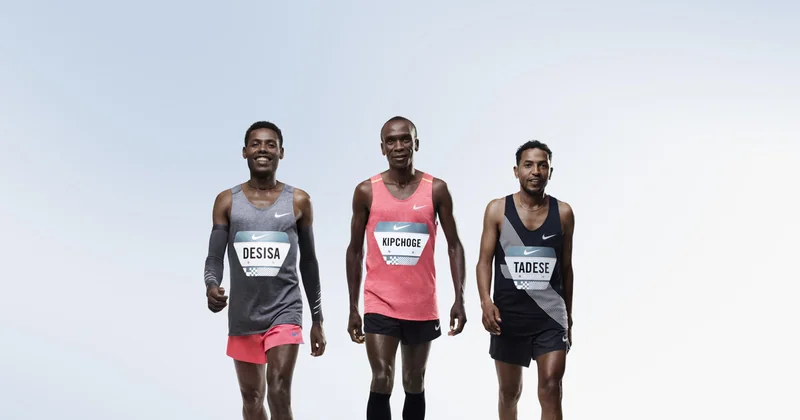
Nike / 2017
WIRED on the science of the attempt. Notice how much of it is about the shoe.
Xbox / 2018
Listen to who designed it, and who it was designed for.
04 / The collection
See each product alongside what it did for the brand. Open each case for the film, my take and how it was measured.
Modelled effectSales trendSurveyReach only or archival
15 campaigns
Greggs, 2019
On 3 January 2019, during Veganuary, Greggs launched a vegan sausage roll with a film that borrowed the style of a tech launch.
A product can be the ad, if it says something about the brand nobody expected.
The best launch of the decade, and it was a sausage roll. The product changed the brand more than any campaign could have.
Image: Greggs, The Vegan Sausage Roll (2019) · launch film still
Greggs was a high-street bakery best known for its pork sausage roll, not for following food trends.
Piers Morgan complained on Twitter, Greggs replied with a joke, and the launch became national news. It was the company’s fastest-selling launch in more than six years.
It treated a £1 pastry with the reverence of a gadget, and that joke did half the work.
Greggs credited the vegan sausage roll for strong trading and raised its profit outlook. That is a business trend: the new product, the publicity and the wider range all moved together.
The company’s trading update reported sales in the weeks after launch.
Volvo, 1959
Volvo engineer Nils Bohlin designed the three-point belt, and Volvo fitted it in 1959. The company left the patent open so any carmaker could use the design for free.
The strongest brand promise is one the product keeps for you.
Every safety ad Volvo has made since is an echo of this one decision. The product was the campaign before anyone wrote a line.
Image: Nils Bohlin with the three-point belt · Volvo Group heritage archive
Car seatbelts in the 1950s were mostly lap belts, and many cars had none.
Safety became the thing Volvo stood for, decades before it was a selling point for anyone else.
It is a brand built on a gift to its competitors.
The invention and the open patent are well recorded. The lives-saved figure is Volvo’s own estimate, and no public source measures what the decision did for Volvo’s sales.
There is no effectiveness record. The evidence is the invention, the patent decision and Volvo’s estimate of its effect.
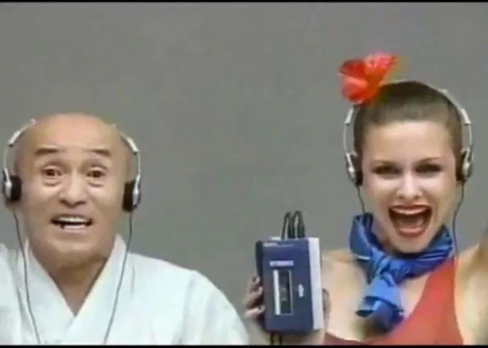
Sony / 1979 / Exposing an assumptionWalkmanA tape player with no speaker, and a new way to live with music.A new category · Music you could carry 385mWalkman players of every type, 1979 to 2009Sony, 1979
In July 1979 Sony launched the Walkman TPS-L2, a small cassette player with lightweight headphones.
If a product changes a habit, the brand becomes the name of the habit.
Sony’s engineers made a product the sales team doubted, and it defined the brand for twenty years. That’s still the best argument for listening to product people.
Image: Sony Walkman TV advert (1979) · still from the upload catalogued by Smithsonian Music
Music came from radios, record players and car stereos. Listening was something you did in a room, or shared.
Sales started slowly, then the first 30,000 sold out within about two months. Sony became the name for personal music for a generation.
Headphones in public, which looked odd in 1979 and normal ever since.
The sales are widely reported. They show the product’s success, not the effect of any single campaign.
The record is unit sales over thirty years.
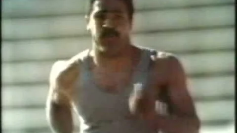
Lucozade / 1983 / Reframed weaknessFrom Sickbed to StadiumA drink for sick children became a drink for athletes.A rescue · A recovery drink became an energy drink +40%Volume sales after the revised campaignIPA 1992 · Ogilvy for SmithKline Beecham
Beecham repositioned it as an energy drink. ‘Aids recovery’ became ‘replaces lost energy’, and Olympic decathlete Daley Thompson fronted the campaign from 1983.
Sometimes the product is right and the story around it is the problem.
I love that the IPA paper admits the first campaign failed. The product didn’t change, the reason to drink it did.
Image: Lucozade, Daley Thompson advert · still from the Ogilvy Museum archive
Lucozade was sold as a drink for people recovering from illness, wrapped in yellow cellophane and kept for the sickroom.
The same drink was seen as a fitness product by younger people, and the brand grew far beyond the sickroom.
It kept the drink and changed the patient into an athlete.
The IPA paper reports a 40% increase in volume sales and better image among the target group. Other sources say UK sales tripled to almost £75m between 1984 and 1989. Both are trends.
Tracking showed why the first Daley Thompson campaign didn’t work. Volume sales were measured after the revised campaign.
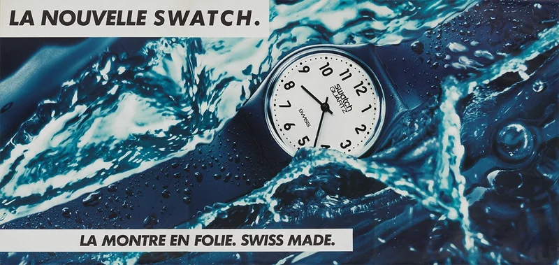
Swatch / 1983 / Reframed weaknessThe Plastic Swiss WatchSwitzerland answered cheap quartz watches with a cheaper, better one.A rescue · A cheap watch for an expensive industry 51Parts in a Swatch, down from about 100 · legacy factSMH, 1983
In 1983 the two largest Swiss watch groups merged and launched the Swatch, a plastic quartz watch made with far fewer parts than usual.
When you can’t win on price, make the cheap version the desirable one.
Cheap and Swiss sounded like a contradiction. Swatch turned it into the point.
Image: Swatch, early print advertising · Swatch Group archive
Cheap quartz watches, mainly from Japan, had pushed the Swiss industry into crisis. Hundreds of watchmakers had gone.
A Swiss watch became a cheap, collectable fashion item, and the group behind it later took the Swatch name.
It made a watch something you changed with your outfit.
Swatch is widely credited with helping rescue Swiss watchmaking, though some historians give more credit to the luxury brands that followed. No public source isolates the brand effect.
There is no effectiveness record. The evidence is the industry’s recovery and the company’s history.
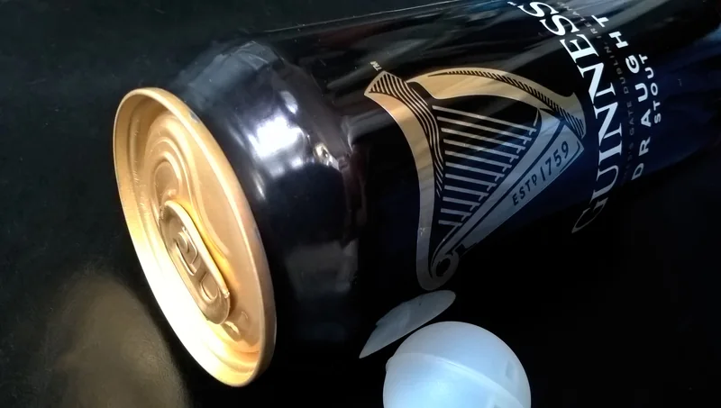
Guinness / 1989 / DemonstrationDraught in a CanPub Guinness at home. Hard to believe, so they had to prove it.Proof of the promise · A widget that made pub Guinness at home 30%Of people trying it were new to Draught GuinnessIPA 1990 · Ogilvy for Guinness
Guinness launched draught in cans with a widget that recreated the creamy head. Ogilvy’s launch campaign tackled the disbelief directly, starting in three test regions.
When the product sounds too good to be true, the ad’s job is to make it believable.
The widget is the hero, but the brief is the clever bit. Ogilvy sold the proof, not the beer.
Drinkers believed proper draught Guinness only existed in the pub, poured from a tap.
The pub pint came home, and the brand reached people who didn’t drink draught Guinness.
A small plastic ball in a can, and a nation listening for the hiss.
The IPA paper reports sales success for the cans and for Guinness as a whole, with fast increases in awareness and trial. It is a sales and trial trend from a test-market launch.
A test market in three regions measured awareness, trial and sales before the national launch.
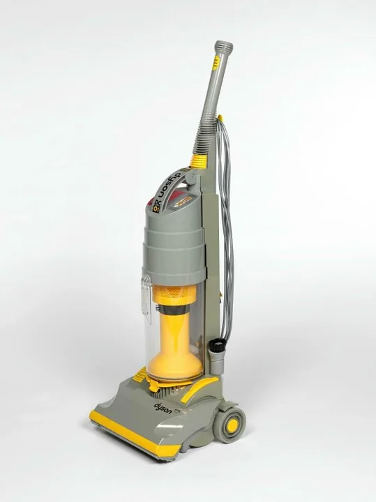
Dyson / 1993 / DemonstrationDC01A vacuum cleaner that let you watch it work.Proof of the promise · A see-through bin that showed the dirt 18 monthsTo become the UK’s best-selling vacuumDyson, 1993
After thousands of prototypes, James Dyson launched the bagless DC01 in 1993 at around twice the price of rivals, with a clear bin so you could see what it picked up.
If people can see the product work, you don’t need to tell them it does.
The clear bin is the best piece of advertising Dyson ever made, and it’s a design decision.
Image: Dyson DC01 · Centre Pompidou, MNAM-CCI / Bertrand Prévost / Dist. GrandPalaisRmn
Vacuum cleaners used bags that clogged and lost suction. Hoover and others led the UK market.
The product was its own demonstration. It became Britain’s best-selling vacuum cleaner within about two years.
The clear bin. Watching dust spin is strangely satisfying, and it sold the machine.
Market share figures from the time put Dyson ahead of Hoover within about two years. That is a sales trend for a product sold with little advertising.
The record is market share and sales rank.
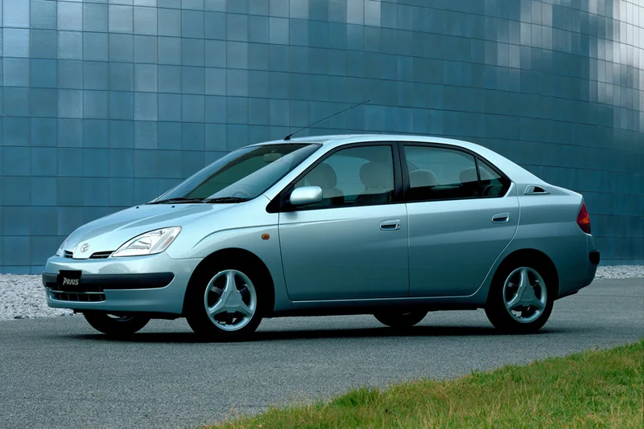
Toyota / 1997 / Owning a momentPriusA car that made fuel economy something to show off.A new category · The first mass-produced hybrid 1mPrius sold worldwide by April 2008Toyota, 1997
Toyota launched the Prius in Japan in December 1997 as the first mass-produced hybrid, then took it to other markets from 2000.
Be first in a new category, and you can own its name for years.
The shape did the marketing. A hybrid that looked like any other car would never have become a badge.
Image: Toyota Prius · original 1997 Toyota launch press photograph
Hybrid cars were concepts and experiments. Fuel economy was something people wanted, not something they displayed.
The Prius became the shorthand for green motoring, and Toyota became the hybrid brand.
Its odd shape. It looked different on purpose, so everyone knew what you drove.
Toyota’s own milestones show the growth in sales. They show the product’s success, not what any campaign added.
The record is Toyota’s announced sales milestones.
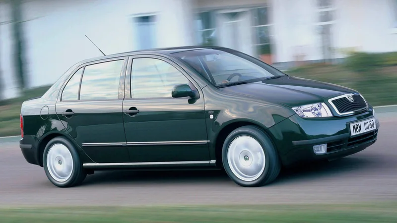
Skoda / 2000 / Reframed weaknessIt’s a Skoda. HonestThe car was good. The jokes were the problem.A rescue · A better car nobody believed in +64%UK sales growthIPA 2002 · Gold · Fallon London for Skoda
For the Fabia launch in March 2000, Fallon London faced the prejudice head on, with ads in which people couldn’t believe a car this good was a Skoda.
When the product has changed and opinion hasn’t, name the opinion.
The product had already been fixed. The campaign just gave people permission to notice. Edition 01’s ‘Think Small’ would approve.
Image: First-generation Škoda Fabia · photograph reproduced by AutomoBible
Skoda jokes were part of British culture. VW had bought the brand in 1991 and improved the cars, but nobody noticed.
Making fun of the joke disarmed it. People looked at the cars again.
It is a brand laughing at itself, which is very British and very disarming.
The IPA paper reports that people rejecting the brand fell from 60% to 42%, and UK sales grew 64%, much faster than in other markets. The comparison with other markets strengthens the case, but it is still a trend.
Brand tracking measured rejection of the marque, and sales were compared with other markets selling the same cars.
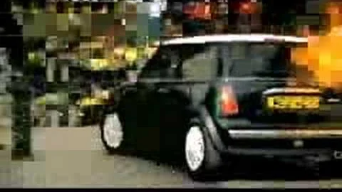
MINI / 2001 / Exposing an assumptionThe New MINIBMW brought back a British icon and made it premium.A rescue · An icon rebuilt as a premium car 2.5mMINIs built at Oxford, 2001 to 2016BMW Group, 2001
In 2001 BMW launched a new MINI, built at Oxford, that kept the look of the original and sold it as a premium small car.
Heritage sells when the product delivers on it.
Edition 05 is full of brands that changed what people loved and paid for it. MINI changed almost everything and kept the bit people loved.
Image: MINI, Mini Martians · launch campaign still, catalogued by the MINI Y Register
The original Mini was loved but old. BMW, which had owned Rover, kept the MINI brand when it sold the rest.
A small car became a fashion statement with a price to match. BMW said production quickly outran its plans.
It looks like the old Mini at a glance and like nothing else up close.
BMW’s figures show a long-running sales success. They show the product’s success, not what the launch campaigns added.
The record is BMW’s production figures.
Nintendo, 2006
Nintendo’s Wii used a motion controller and simple games such as Wii Sports so anyone could pick it up.
Sometimes the biggest market is the people the category ignored.
The Wii put people in the picture that the industry had left out. That’s Representation, done with a product instead of a cast.
Image: Evan-Amos, Wii console and Wii Remote · Wikimedia Commons, public domain
Consoles competed on graphics and power, built for people who already played.
Grandparents bowled in living rooms. Nintendo widened who a gamer was.
People waving their arms at the television, of every age.
Nintendo’s figures show huge sales. They show the product’s success, not what the advertising added.
The record is Nintendo’s published unit sales.
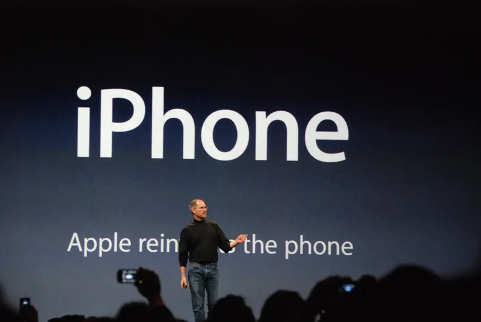
Apple / 2007 / DemonstrationiPhoneA phone, an iPod and an internet device in one.A new category · A phone with one screen and no keypad 74 daysTo sell one million iPhonesApple, 2007
Steve Jobs introduced the iPhone in January 2007, and it went on sale on 29 June.
The best launch shows people something they didn’t know they wanted.
Edition 01 had Apple’s ‘1984’. This is the product that finally lived up to it.
Image: Blake Patterson, Steve Jobs presents iPhone (2007) · Wikimedia Commons, CC BY 2.0 · resized to WebP
Phones had keypads and small screens. Apple sold computers and iPods.
Apple became a phone company, and the phone became the centre of people’s digital lives.
The keynote itself. Jobs repeated ‘an iPod, a phone and an internet communicator’ until the audience realised it was one device.
Apple’s own announcement gives the milestone. It is self-reported, and it shows demand for the product rather than the effect of the advertising.
The record is Apple’s announced sales milestone.
Nike, 2017
In May 2017 Nike ran Breaking2, an attempt to break two hours for the marathon at Monza, with athletes in its new carbon-plated shoe.
If your product is the best, let the stopwatch say so.
Most brands would kill for proof like a rule change. Nike made the product so good the governing body had to answer it.
Shoes were sold on comfort and style. Nobody claimed a shoe could make you measurably faster.
Eliud Kipchoge ran 2:00:25. The Vaporfly became the shoe every serious runner wanted, and in 2020 World Athletics tightened its rules on shoes.
A world-class athlete running laps of a motor-racing circuit at dawn, behind a car.
A New York Times analysis of race data found Vaporfly runners were faster than similar runners in other shoes. That is evidence about the shoe. No public source shows the effect on Nike’s sales.
The record is race times, independent analysis of race data and the rule change.
D&AD 2019 · Black Pencil · Microsoft
Microsoft designed the Xbox Adaptive Controller with gamers with disabilities and accessibility charities. It went on sale in 2018, in packaging that could be opened easily.
Design for the people at the edges, and the whole brand looks different.
Purpose you can hold in your hands. After Edition 05’s borrowed causes, this is the opposite: a brand that built the thing first.
Image: Xbox Adaptive Controller with external switches (2018) · Microsoft
Standard controllers assumed two hands and fine motor control. Many gamers with limited mobility had to improvise.
Accessibility became part of what Xbox stands for, not a side project.
Even the box was designed to open easily. The care shows everywhere.
The product won a D&AD Black Pencil and its campaign won a Cannes Grand Prix. No public source shows sales or brand effects.
There is no published effectiveness record, only awards.
Diageo, 2020
Guinness launched an alcohol-free stout in Great Britain in 2020. Soon after launch it was recalled over a quality problem, then relaunched.
A product can widen who a brand is for without changing what it stands for.
It survived a recall in its first weeks, which would have finished most launches in Edition 05. The product was good enough to come back.
Image: Guinness 0.0 launch activation (2020) · Hope & Glory, launch PR agency
Alcohol-free beer was a compromise, and non-drinkers in the pub had little to order.
Guinness 0.0 overtook Heineken 0.0 to become the UK’s biggest alcohol-free beer, while the Guinness brand reached more women and younger drinkers.
It looks exactly like a pint of Guinness, which is the whole point in a pub.
Trade press reports Guinness 0.0 as the UK’s biggest alcohol-free beer, alongside strong growth for the Guinness brand. That is a sales trend, and the whole brand was growing at the same time.
The record is market rankings and Diageo’s results.
No campaigns match. Try clearing the search or setting a filter back to All.
05 / The evidence
When a product creates a category, the sales are the story. Walkman, Prius, Wii and iPhone all have huge numbers. None of them shows what the advertising added.
Rescues offer the best evidence here, because something stayed the same. Lucozade kept the drink, and Skoda compared Britain with markets that sold the same cars.
When the product proves the brand’s claim, the proof is often a fact rather than a result: a patent left open, a sales chart, a race time.
A product can say what a brand believes. Greggs and Guinness 0.0 show sales trends. The Xbox controller shows awards. None isolates the effect.
Every case gets one of five ratings, strongest first: modelled effect, sales trend, survey, reach only and archival. Here sales, unit sales and market share count as trends. A fact such as a race time is marked so it isn’t read as a result.
Each case is a product, not just a campaign, that changed how people saw a brand, and has a public record. Films come from brand, broadcaster or publisher channels, and where none exists the case says so.
06 / The series in retrospect